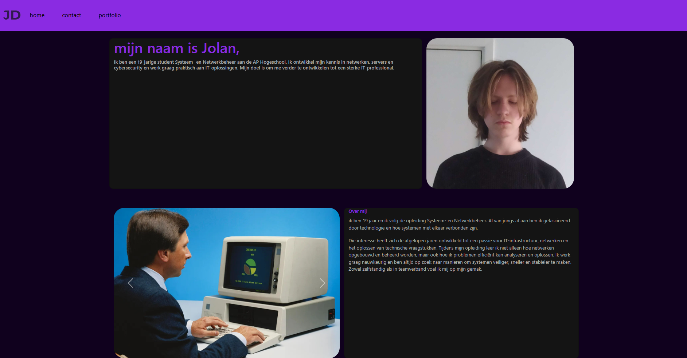

Portfolio Webtech
Voor het vak Webtech heb ik een portfolio website gemaakt waarin ik mijn projecten en vaardigheden presenteer. De site is gebouwd met HTML, CSS en Bootstrap en is volledig responsive, zodat alle onderdelen op mobiel overzichtelijk onder elkaar staan. Het project heeft me geholpen mijn webdevelopment-vaardigheden verder te ontwikkelen.
Voor het vak Webtech heb ik een eigen portfolio website ontwikkeld waarin ik mijn projecten, vaardigheden en interesses presenteer. Het doel van deze opdracht was om een professionele en overzichtelijke website te bouwen met behulp van HTML, CSS en Bootstrap. Tijdens het maken van de website heb ik veel geleerd over webstructuur, responsive design en het toepassen van stylingtechnieken. De website bestaat uit meerdere pagina’s, waaronder een homepagina, een projectpagina en een contactgedeelte. Op de projectpagina worden mijn gemaakte opdrachten overzichtelijk weergegeven met afbeeldingen en korte beschrijvingen. Dankzij het gebruik van Bootstrap is de layout volledig responsive: op grotere schermen worden projecten naast elkaar geplaatst, terwijl ze op mobiele apparaten automatisch onder elkaar verschijnen. Daarnaast heb ik aandacht besteed aan een duidelijke navigatie en een consistente huisstijl. Ik heb gekozen voor een rustige vormgeving waarbij de inhoud centraal staat.